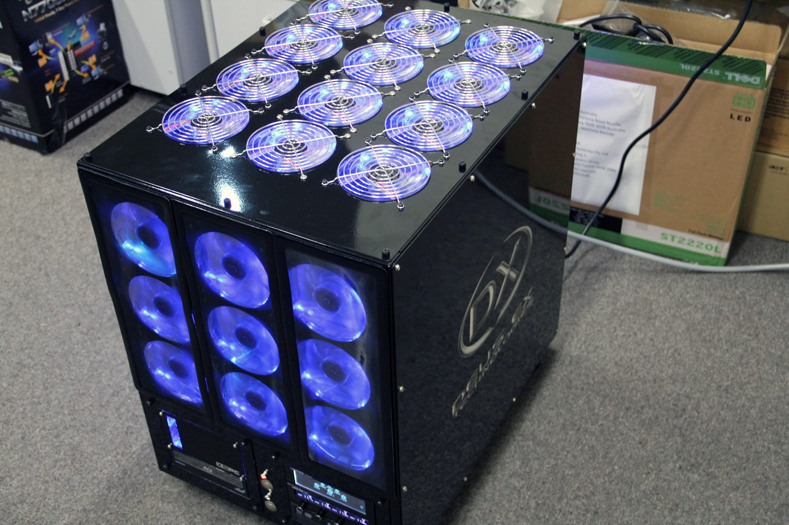
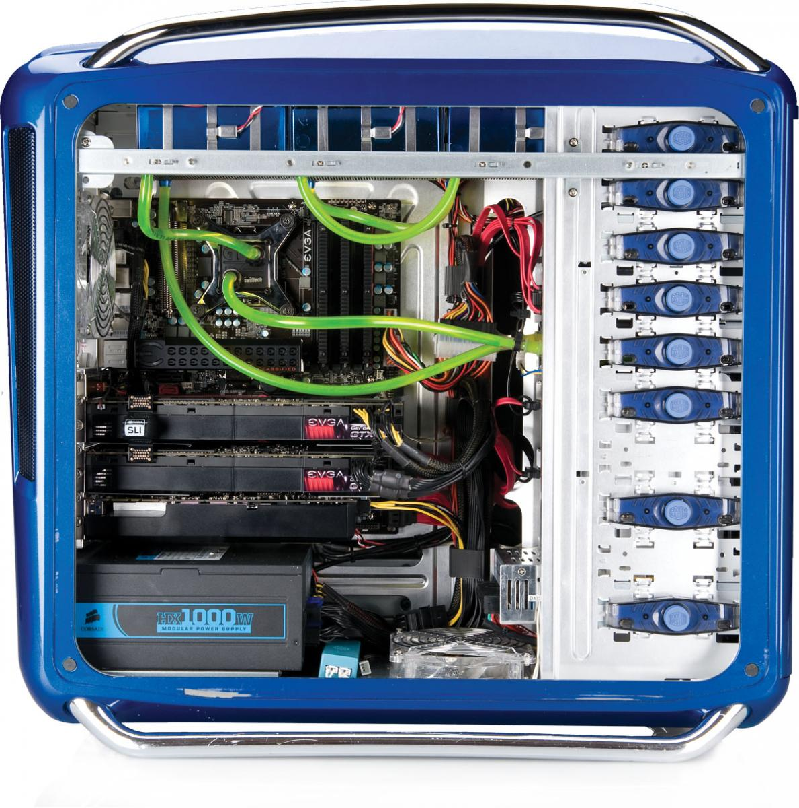

980x at 4.21Ghz with 55 degree load temp
Tri Sli GTX 580s with 45 degree load temp
Watercooled Gigabyte UD9
18TB storage (6 x 3TB hitachi 7200rpm drives)
2 x 240GB Corsair Force SSDS in RAID 0
33 Yate Loon blue LED 2000rpm fans (fans set to 1000rpm currently but can be set to full speed for maximum brightness. This can be easily adjusted from the top touch screen fan controller which controls every fan in the case.)
Two lamptron heavy duty fan controllers (FC-touch and FC-5 v2)
Two laing d5 pumps, Two EK RX 480 quad radiators, Blue Mayhem dye, Bitspower compression fittings
Imported Mountain Mods Extended Ascension Case
1500 Watt Silverstone ST1500 power supply
Bitspower Molex power board and CCFLs.
The AquariusPC is a fully operational computer system designed inside a liquid-filled 5 gallon aquarium for the ultimate in silent, cool computing. Yes; The Intel/AMD CPU, motherboard, Nvidia/ATI videocard, memory, and power supply are completely submerged! And yes, you can turn on this computer to surf the internet, crunch your tax numbers, or play a game of minesweeper.

Our current desktop test bed consists of a quad-core 2.66GHz Intel Core 2 Quad Q6700, 2GB of Corsair DDR2/800 RAM on an EVGA 680 SLI motherboard. We are running two EVGA GeForce 8800 GTX cards in SLI mode, a Western Digital 150GB Raptor, a 500GB Caviar hard drive, an LG GGC-H20L, a Sound Blaster X-Fi, and a PC Power and Cooling Silencer 750 Quad. OS is Windows Vista Home Premium 64-bit.